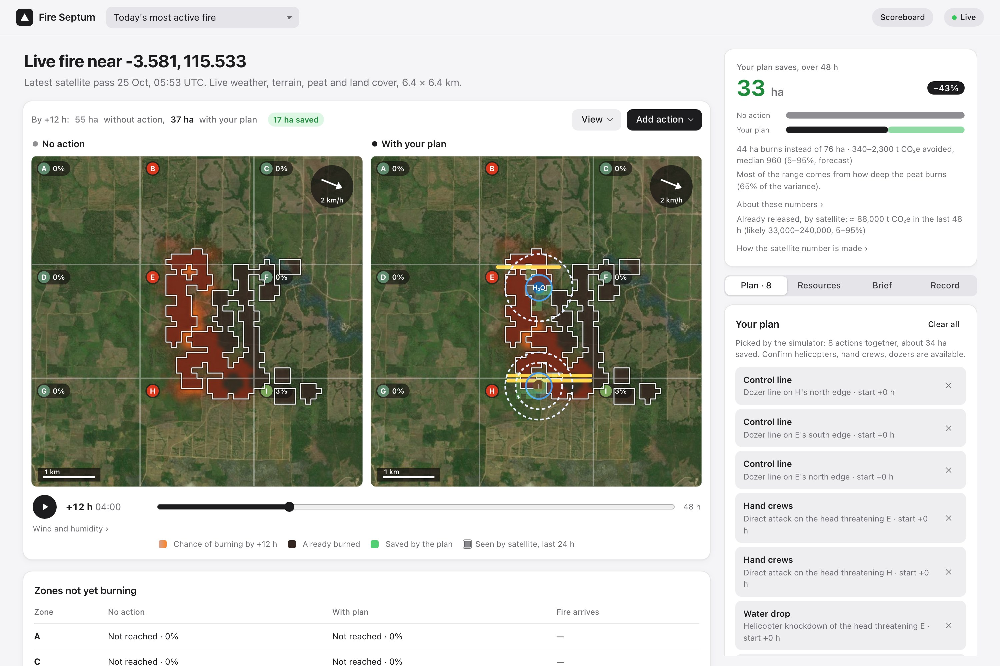
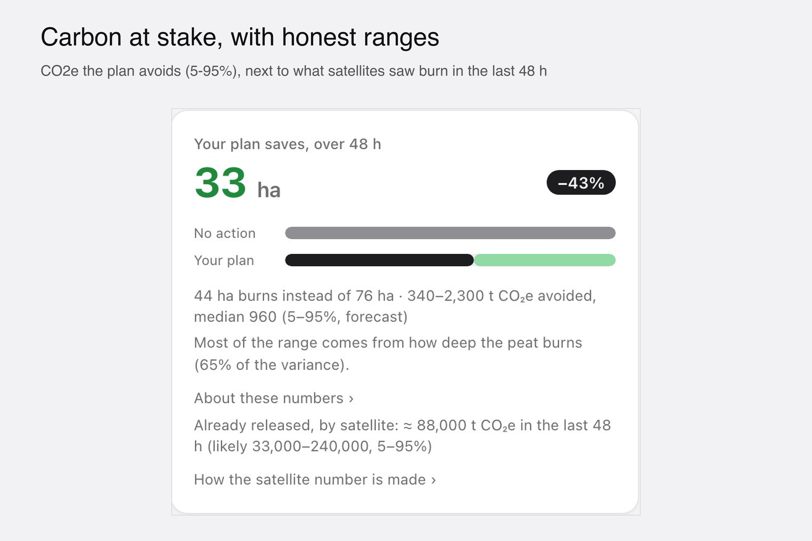
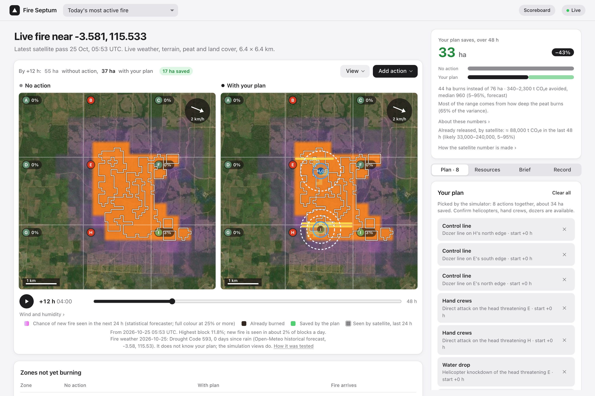
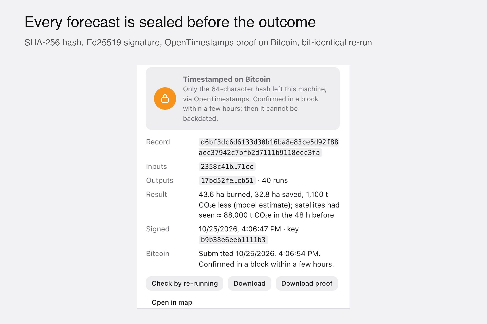
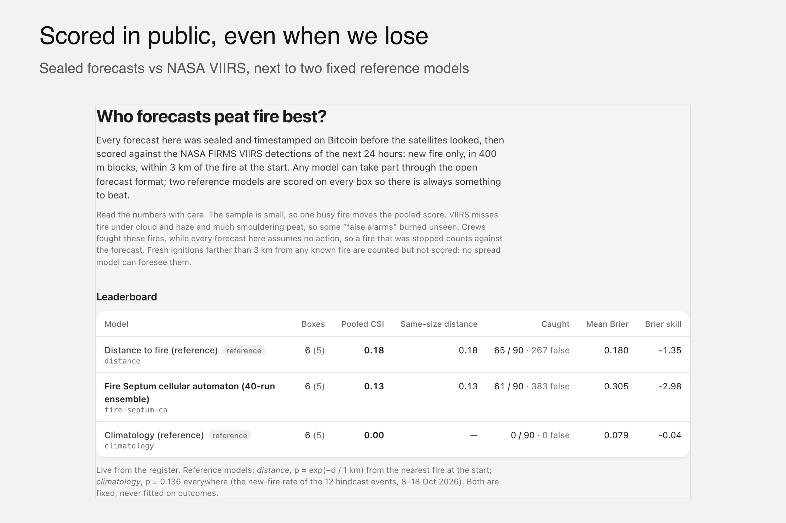
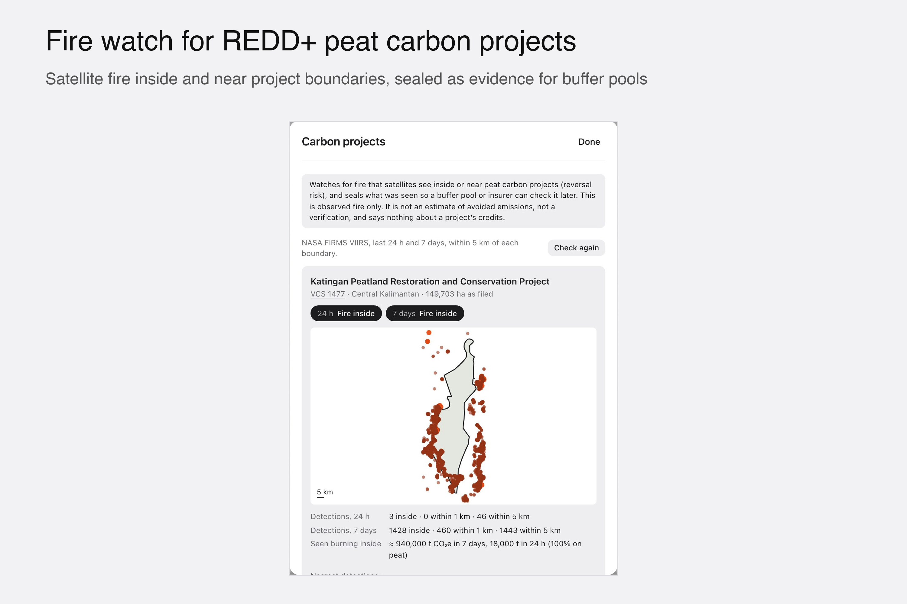
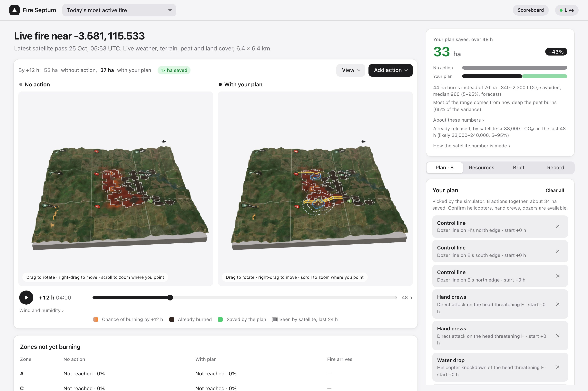

IEEE ClimateChain Global Hackathon 2026 · Track: Climate Data & Environmental Monitoring
Fire Septum
Peat-fire forecasts you can hold to account. We predict where Indonesia's fires spread next, seal each forecast on Bitcoin before it happens, then score it in public against NASA satellites.
Live appfire-septum.vercel.app
Codegithub.com/aliefauzan/fire-septum
Demo videoyoutu.be/dcFxrvgIWsQ

A real fire in Kalimantan, seen by NASA satellites on 25 Oct 2026. Left: what the simulation expects with no action. Right: with the plan it picked (control lines, a water drop, hand crews). Everything on this page is live data.
Sekat api is Indonesian for "fire barrier". This pack is for judges: the problem, what we built, what we measured, and how you can check it yourself without trusting us. The last page is a real commander brief exported by the app.
The problem: nobody keeps score of fire forecasts
In 2015, Indonesia's peat fires released more CO₂ per day than the whole US economy (WRI, from GFED estimates). Drained tropical peat releases about 800 t CO₂e per hectare when it burns (IPCC Tier 1), and it can smoulder underground for weeks.
Every dry season, BPBD and Manggala Agni commanders decide where to send crews, dozers and helicopters. The data they need is scattered across NASA satellites, weather services, terrain, peat maps, canals and roads. And no one keeps score of the forecasts they act on:
You cannot prove what a model said before the fire spread.
A model can always be tuned afterwards to look good on past fires.
So no one knows which forecasts deserve trust, and decisions leave no record anyone can check.
This is the track's problem: environmental data that is fragmented and hard to verify.
Our answer: one forecast, made accountable
1Forecast
A gradient-boosted model gives the chance of new fire tomorrow in every 400 m block (trained on 2015 and 2019, tested on fires it never saw). A 40-run simulation shows how the fire spreads over 24–48 h, with the uncertainty visible.
2Plan and count the carbon
Control lines, helicopter drops, hand crews and peat injection are simulated at several start times and ranked by hectares saved, using only resources the commander says exist. CO₂e avoided is shown as a range.
3Seal before the outcome
Every forecast and decision is hashed (SHA-256), signed (Ed25519) and timestamped on Bitcoin with OpenTimestamps. Daily Merkle roots can be attested on Base (EAS). Re-running a record gives bit-identical numbers.
4Score in public
After 24 h, each sealed forecast is scored against NASA VIIRS detections and stays on a public scoreboard, good or bad, next to two fixed reference models. Anyone can submit a model in the open format.
It also watches fire in and around REDD+ peat carbon projects and seals the satellite evidence, and it exports a one-page PDF brief for commanders in Bahasa Indonesia or English.
Why a blockchain, and only this much. The one trust question is "was this said before the fire spread?". A Bitcoin timestamp answers exactly that, with no wallet, fee or token. Fire data never goes on chain; a smart contract could not make a simulation more correct. Re-running does that.
What we measured, not claimed
The train / validation / test split was fixed by a stated rule and timestamped on Bitcoin before any model was trained (data/validation/events.json.ots): 1,492 fire events plus 2,700 training boxes.
AUC 0.79
next-day forecaster on held-out 2023 Sumatra fires (184 boxes)
run in CI on every push, with the cross-engine check
Next-day forecaster vs simple references, same rows (test set: 2023 Sumatra)
Model
Brier skill [95% CI]
CSI
AUC
Fire Septum forecaster (calibrated)
+0.036 [+0.026, +0.045]
0.08
0.79
Distance to fire
+0.022 [+0.016, +0.028]
0.06
0.76
Persistence
+0.020 [+0.015, +0.026]
0.05
0.72
Climatology
0.000
0.02
0.50
Spread simulation hindcast, 12 real fires, 8–18 Oct 2026
Region
Events
New-fire blocks
CSI, model
CSI, distance only
Pooled
12
114
0.23
0.18
Kalimantan
6
90
0.35
0.25
Sumatra (held out)
6
24
0.12
0.11
Pre-registered forecasts: sealed before the outcome, scored after
Model
Boxes
CSI
POD
FAR
Distance (reference)
6
0.18
0.72
0.80
Fire Septum simulation
6
0.13
0.68
0.86
Climatology (reference)
6
0.00
0.00
0.00
On the register our simulation currently scores below the distance reference. We publish that. It is the point of the register: a sealed forecast cannot be tuned after the fact, so the scoreboard tells the truth.
Carbon cross-checks
Satellite (FRP) CO₂ vs GFED4.1s in the five most-burned peat cells: 3.04× (2015), 1.21× (2019), 1.02× (2023).
Burned area measured afterwards from Sentinel-2 (dNBR) and Sentinel-1 (SAR) for 9 of the October 2026 fires: 81–100% lies inside the FIRMS footprints.
Every emission number is a Monte Carlo 5–95% range; peat burn depth comes from each cell's fire history (Konecny et al. 2016).
Sources: docs/validation-scale.json, docs/hindcast-rerun-2026-10-24-barriers.json, data/register/, docs/determinism.json. These numbers are generated from the data files and checked in CI.
Features that matter for the climate

Carbon at stake: CO₂e the plan avoids as a 5–95% range, and what satellites saw burn in the last 48 h.

Tomorrow view: chance of new fire in every 400 m block in the next 24 h.

Sealed on Bitcoin before the outcome. Change one byte of input and the hash changes.

Public scoreboard against NASA VIIRS, next to two fixed reference models.

Fire watch for REDD+ peat carbon projects: reversal-risk evidence for buffer pools and insurers.

The same forecast on 3D terrain from real elevation and satellite imagery.
Check it yourself, without trusting us
In the browser (2 minutes)
Open fire-septum.vercel.app. It loads today's most active fire in Kalimantan from NASA FIRMS.
Open the Record tab and press Seal and sign, then Timestamp on Bitcoin.
Press Check by re-running: the app re-runs all 40 simulations and recomputes every hash.
Press Download proof to get the receipt and a standard .ots file.
Open Scoreboard to see every pre-registered forecast and its score.
With the reference OpenTimestamps client (no Fire Septum code involved)
pip install opentimestamps-client
ots upgrade fireseptum-<hash>.receipt.json.ots # once the Bitcoin block is confirmed
ots verify fireseptum-<hash>.receipt.json.ots
From the code
git clone https://github.com/aliefauzan/fire-septum && cd fire-septum
npm install && npm test # 191 tests
node scripts/determinism.mjs # same output hash in Node, Chromium, Firefox, WebKit
node scripts/export-proofs.mjs # every register receipt + .ots proof, for ots verify
npx tsx scripts/gen-docs.ts --check # every number in the docs matches the data files
Questions a skeptical judge may ask
Isn't OpenTimestamps trivial?
The cryptography is simple on purpose. What is new is what gets sealed: a full reproducible forecast (inputs and every simulated cell), sealed before the outcome exists and scored after. That is pre-registration for climate models.
Couldn't you pick the fires you predict well?
No. The register picks the top 3 FIRMS clusters per island by a fixed rule at issue time, and keeps every forecast.
Couldn't you edit a forecast later?
Its hash is in a Bitcoin block. Changing one input, rate or simulated cell changes the hash, and Check by re-running fails.
Is the model any good?
The next-day forecaster beats persistence and distance on held-out fires. The spread simulation is only slightly better than distance in hindcast and below it on the register so far. We show both.
Are the CO₂ numbers credits?
No. They are IPCC 2013 Wetlands factors with per-cell burn depth, shown as ranges and cross-checked against GFED and Sentinel burned area. Not credits, not claimable avoided emissions.
What about AI?
The core is a physical-statistical model, not a black box. An optional LLM only rewrites the simulated numbers into a brief, and it is off by default.
Who has used it?
Nobody operational yet. Next step is testing the planning view and PDF brief with one Daops Manggala Agni unit.
Honest limits
Peat fires smoulder and creep, so a flame-front cellular automaton fits them poorly. Its skill over distance-only is small and its raw probabilities are not calibrated. This is why we added the separate statistical forecaster.
Peat burn depth is inferred from satellite fire history, not measured in the field.
The satellite (FRP) emission number runs 1–3× GFED and can disagree with the forecast number by orders of magnitude. Both are shown with their method.
OpenStreetMap canals are patchy, so the drainage effect is an assumption.
SiPongi (Kemenhut) data needs written permission, so that adapter is off.
It has not yet been tested with BPBD or Manggala Agni staff.
Who it is for
BPBD and Manggala Agni commanders: where fire is likely tomorrow and what acting would change, with uncertainty visible and no invented resources.
Provincial governments: when to request aircraft, on a record that shows what was known at the time.
Researchers and agencies: a public, pre-registered scoreboard where any fire model can be compared.
Carbon-project verifiers, buffer pools and auditors: proof of what was forecast, decided and observed, and when.
What's next
Run the register through the 2026 dry season and invite other models onto the scoreboard.
Add peat-moisture data (SMAP / SiPALAGA) to the forecaster.
Test the planning view and the PDF brief with one Daops unit.
Built with
TypeScript, React, Vite, three.js, Web Workers · Python, scikit-learn · NASA FIRMS, ERA5 / Open-Meteo, AWS Terrain Tiles, Global Forest Watch peat, ESA WorldCover, OpenStreetMap, Sentinel-1/2, BMKG · OpenTimestamps (Bitcoin), Ethereum Attestation Service (Base), Ed25519, RFC 6962 Merkle trees · GitHub Actions, Vercel, Vitest, Playwright.
Research prototype using a simplified fire model. Not firefighting guidance: follow BPBD, Manggala Agni and incident command. Emission numbers are model or satellite estimates, not measurements and not carbon credits. Next page: a real situation brief exported by the app on 25 Oct 2026.